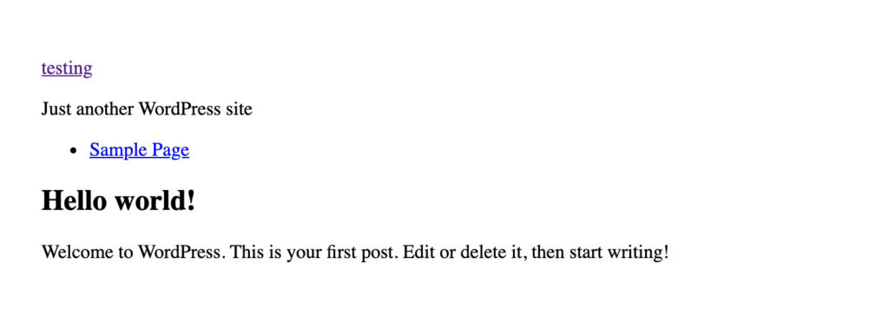

Learning to create custom WordPress themes opens up a whole new world for you to explore. It allows you to build custom designs for yourself, your clients and even contribute back to the open-source community.
In this guide, we’re going to take you from zero to having a fully functional theme that can be submitted to the WordPress.org theme directory.
To follow along you will need a basic understanding of HTML, CSS, PHP and how WordPress works.
All the code used in this guide will be available for reference in this Github repository.
Step #1: Creating Essential Files for Your Custom Theme
A functioning WordPress theme can consist of just two files: style.css and index.php. This is possible because of WordPress’s template hierarchy.
When WordPress outputs a webpage it searches for the most specific template available, if a template doesn’t exist it will move down the hierarchy until it finds one that does. Here’s a practical example:
The user is on https://example.com/practical-example, which is a page. WordPress will try to locate a template in this order:
- page-{slug}.php – The page slug is /practical-example, WordPress will look to use your-theme/page-practical-example.php
- page-{id}.php – The page ID is 42, WordPress will look to use your-theme/page-42.php.
- page.php – WordPress will try the general-purpose your-theme/page.php template.
- singular.php – The singular template can render Posts and Pages, so it’s tried after the more specific page.php
- index.php – Lastly your-theme/index.php is used if no other template is found.
Let’s start by building a theme with just the essential files and then we can layer on more features as we explore how they work.
In /wp-content/themes/, create a folder named my-custom-theme and create these two following files:
style.css
For WordPress to recognize our theme and output it properly in the Appearance → Themes list we need to place some WordPress-specific code at the top of style.css, it looks like this:
/* Theme Name: My Custom Theme Theme URI: https://yourwebsite.com/theme Author: Your Name Author URI: https://yourwebsite.com Description: This is my first custom theme! Version: 1.0.0 License: GNU General Public License v2 or later License URI: <https://www.gnu.org/licenses/gpl-2.0.html> Text Domain: my-custom-theme Tags: custom-background */
Technically none of the fields are required, but if you want your theme to look good in wp-admin then they are highly encouraged. They are also required if you are distributing your theme on WordPress.
- Theme Name – You should always supply a theme name. If you don’t then the folder name will be used, my-custom-theme in our example.
- Theme URI – If used, the theme URI should provide a link to a page where visitors can learn more about the theme.
- Author – Your name goes here.
- Author URI – A link to your personal or business website can be placed here.
- Description – The description is shown on the wp-admin theme modal and also on the WordPress theme listing.
- Version – Version numbers help developers keep track of changes and let users know if they are using the latest version. We follow the SemVer numbering system to denote the severity of changes in an update.
- License – How you license your theme is up to you, but if you choose a non-GPL-compatible license then you won’t be able to distribute your theme on WordPress.
- License URI – This is simply a link to the license listed above.
- Text Domain – The text domain is used when translating your theme into other languages. Don’t worry we will explore this in-depth later. For now, it’s enough to know that it’s a good practice for the theme folder and the text-domain to be the theme name separated by hyphens instead of spaces.
- Tags – Tags are only used if you are uploading your theme to the WordPress.org theme directory. They are the basis of the ‘Feature Filter’ mechanism.
Copy and paste the above into style.css and you will have something like this:
Note: It looks a little blank at the moment as we don’t have a screenshot yet. We will add that later.
index.php
index.php is the only other strictly required file. Its job is to render all the front-end output for our theme.
Since index.php is going to be rendering all of our pages (home, posts, categories, archives) it’s going to be doing a lot of work. To start we need a head section that will cover the HTML basics.
<!DOCTYPE html>
<html <?php language_attributes(); ?>>
<head>
<meta charset="<?php bloginfo( 'charset' ); ?>">
<meta name="viewport" content="width=device-width, initial-scale=1">
<link rel="profile" href="http://gmpg.org/xfn/11">
<?php wp_head(); ?>
</head>
This is standard HTML with one exception, [wp_head()](<https://developer.wordpress.org/reference/hooks/wp_head/>). wp_head
is a core function that allows WordPress and third-party plugins to
insert code into the header without modifying your template files. This
is called an action hook.
If you are familiar with HTML you may notice there isn’t a <title> tag to output the page title. That’s because WordPress can use the wp_head hook to dynamically insert the title.
Another use of wp_head is to enqueue styles (.css) and scripts (.js). There are very good reasons for doing this instead of hardcoding them, which we will look at later on.
Next, we have the body of the page:
<body <?php body_class(); ?>>
body_class() is a helper function provided by WordPress that will output a list of useful CSS classes which describe the page being displayed such as:
class="page page-id-2 page-parent page-template-default logged-in"class="page page-id-2 page-parent page-template-default logged-in"
body_class(); also accepts a parameter so you can add your own classes, for example:
<body <?php body_class( 'wide-template blue-bg' ); ?>>
Next, we have the template header.
<header class="site-header"> <p class="site-title"> <a href="<?php echo esc_url( home_url( '/' ) ); ?>"> <?php bloginfo( 'name' ); ?> </a> </p> <p class="site-description"><?php bloginfo( 'description' ); ?></p> </header><!-- .site-header -->
Here we are using WordPress’ built-in template functions to output the Site Title and Description. We’ve also used a helper function, home_url(), to link the Site Title back to the homepage.
Next up, the body of the page:
<div class="site-content"> <?php if ( have_posts() ) : while ( have_posts() ) : the_post(); ?> <article <?php post_class(); ?>> <header class="entry-header"> <?php the_title( '<h1 class="entry-title">', '</h1>' ); ?> </header><!-- .entry-header --> <div class="entry-content"> <?php the_content( esc_html__( 'Continue reading →', 'my-custom-theme' ) ); ?> </div><!-- .entry-content --> </article><!-- #post-## --> <?php // If comments are open or we have at least one comment, load up the comment template. if ( comments_open() || get_comments_number() ) : comments_template(); endif; endwhile; else : ?> <article class="no-results"> <header class="entry-header"> <h1 class="page-title"><?php esc_html_e( 'Nothing Found', 'my-custom-theme' ); ?></h1> </header><!-- .entry-header --> <div class="entry-content"> <p><?php esc_html_e( 'It looks like nothing was found at this location.', 'my-custom-theme' ); ?></p> </div><!-- .entry-content --> </article><!-- .no-results --> <?php endif; ?> </div><!-- .site-content -->
This is where it gets interesting (and a bit more complex). Here we are using the most important feature of WordPress, the Loop. The loop does the hard work of figuring out which page the user is on and what should be shown. It then returns a list of one or more ‘posts’ that we can loop through and output data using template functions.
If the Loop doesn’t return any results, for example on a 404 page or deleted post, we use an else operator to show a predefined message.
Without any of the surrounding code, a simplified loop looks like this:
if ( have_posts() ) : // check if the loop has returned any posts. while ( have_posts() ) : // loop through each returned post. the_post(); // set up the content so we can use template tags like the_title(). the_title(); // output the post title. the_content(); // output the post content. endwhile; else : echo 'No Page Found'; // output an error message if there are no posts. endif; ?>
Note: Because WordPress has its origins in blogging, a lot of functions use the ‘post’ terminology, even though they can return and output any type of content (posts, pages, custom post types).
Lastly, we have the footer, all we need to do here is close the HTML tags we opened earlier. There’s another action hook, wp_footer(), which is actively used by WordPress and plugins to include scripts in the footer needed to render the page.
<?php wp_footer(); ?> </body> </html>
If you’ve been following along so far you will have a fully functional WordPress theme that looks like this:
Our theme is not going to win any design awards (it has no CSS) and it’s missing a lot of features that users consider essential (sidebars, navigation, metadata, thumbnails, pagination, etc.) but it’s a great start!
Let’s continue on and see how we can improve it.
Step #2: Create functions.php
Functions.php is not strictly a required file, but it provides so many benefits that 99.99% of themes have it. In functions.php you can utilize WordPress’ built-in theme functionality and also add your own custom PHP code.
Create a functions.php in your theme folder now as we will be adding code to it in the next sections.
Adding a Navigation Menu
Most, if not all websites utilize a navigation menu, but up to now our theme doesn’t support one. To tell WordPress our theme features a navigation menu, we must register it in functions.php like this:
register_nav_menus( array(
'menu-1' => __( 'Primary Menu', 'my-custom-theme' ),
);
Note: register_nav_menus() accepts an array so you can register more than one menu if needed.
WordPress now knows about our menu, but we still need to output it in our theme. We do that by adding the following code below the site description in index.php:
wp_nav_menu( array(
'theme_location' => 'menu-1',
) );
Now we have an (unstyled) navigation menu:

Adding a Sidebar
Our theme doesn’t have a sidebar (widget area) either, let’s fix that now.
First, we need to register the sidebar in functions.php:
function my_custom_theme_sidebar() {
register_sidebar( array(
'name' => __( 'Primary Sidebar', 'my-custom-theme' ),
'id' => 'sidebar-1',
) );
}
add_action( 'widgets_init', 'my_custom_theme_sidebar' );
Now create sidebar.php in your theme folder and add the following code:
<?php if ( is_active_sidebar( 'sidebar-1' ) ) { ?>
<ul class="sidebar">
<?php dynamic_sidebar('sidebar-1' ); ?>
</ul>
<?php } ?>
Here we are using an if statement to check if the sidebar is ‘active’ before we output the code. An active sidebar is one that the user has added at least one widget to.
The last step is to include the sidebar in index.php, above wp_footer() add a get_sidebar() call.
Adding Featured Images
Like sidebars and navigation menus, we can’t just output featured images in our theme and expect them to work, we must tell WordPress we support that feature first. In functions.php add:
add_theme_support( 'post-thumbnails' );
Now we can add the_post_thumbnail(); within our loop and the thumbnails will work. The only problem is that they will output at WordPress’s maximum size of 1920px x 2560px, which is too big for most uses. Luckily WordPress has another helper function: add_image_size();
When a user uploads an image, and if image size is defined, WordPress will generate a version of the uploaded image at that size (while keeping the original). If the user’s image is smaller than the dimensions you’ve set WordPress will do nothing as it can’t make an image bigger than the original.
To use an optimized feature image rather than the original, place the following code in functions.php:
add_image_size( 'my-custom-image-size', 640, 999 );
The first parameter is the handle, the second is the image width and the third is the height. Both height and width are optional in case you only want to limit one dimension.
In index.php:
the_post_thumbnail( 'my-custom-image-size' );
Enqueueing Styles and Scripts
Earlier we stated that it’s better to enqueue styles and scripts rather than hardcoding them directly into the template files. That’s because enqueuing allows for a lot more flexibility.
When done correctly, enqueuing also tells WordPress which resources are being loaded. When WordPress knows which resources are needed it can make sure the same resource isn’t being loaded more than once. This is especially important when you have an extremely popular library like jQuery or FontAwesome that multiple themes and plugins will be utilizing.
Another benefit of enqueuing is that a resource that is enqueued can be dequeued by a plugin, avoiding the need to modify template files.
Although our theme has a style.css file it isn’t using it yet, let’s enqueue that now:
function my_custom_theme_enqueue() {
wp_enqueue_style( 'my-custom-theme', get_stylesheet_uri() );
}
add_action( 'wp_enqueue_scripts', 'my_custom_theme_enqueue' );
get_stylesheet_uri()
is a helper function that retrieves the URI of the current theme’s
stylesheet. If we were enqueueing any other file we would need to do
this instead:
wp_enqueue_style( 'my-stylesheet', get_template_directory_uri() . '/css/style.css' );
Our theme doesn’t have any scripts, if it did we would enqueue them like this:
function my_custom_theme_enqueue() {
wp_enqueue_style( 'my-custom-theme', get_stylesheet_uri() );
wp_enqueue_script( 'my-scripts', get_template_directory_uri() . '/js/scripts.js' );
}
add_action( 'wp_enqueue_scripts', 'my_custom_theme_enqueue' );
An exception to the above is scripts that have been pre-registered by WordPress, in those cases you only need to supply the first parameter ($handle):
wp_enqueue_script( 'jquery' );
Adding Style With CSS
Our theme has strong foundations but lacks any design, adding some basic CSS to style.css will make a huge difference. We’ve added around ~100 lines of CSS to our sample theme as a demonstration and the result looks like this:
Title Tag
All themes should utilize WordPress’s built-in functionality to
generate the title tag, which is enabled by adding this code to your functions.php file: add_theme_support( 'title-tag' ); That’s all there is to it, WordPress will handle the output of the page <title>
and if needed plugins can modify the output using filters. SEO plugins
often do this in an effort to further optimize the titles.
Step #3: Add Template Parts
Right now 80% of our template code is in index.php.
While this works it will result in a lot of code repetition when we have other template files such as singular.php, search.php, and archive.php. Template Parts make theme development easier by allowing us to re-use code across templates. As our header and footer will be the same on every page they are a perfect candidate for using template parts. First, create header.php and move the following code from index.php:
<!DOCTYPE html>
<html <?php language_attributes(); ?>>
<head>
<meta charset="<?php bloginfo( 'charset' ); ?>">
<meta name="viewport" content="width=device-width, initial-scale=1">
<link rel="profile" href="<http://gmpg.org/xfn/11>">
<?php wp_head(); ?>
</head>
<header class="site-header">
<p class="site-title">
<a href="<?php echo esc_url( home_url( '/' ) ); ?>">
<?php bloginfo( 'name' ); ?>
</a>
</p>
<p class="site-description"><?php bloginfo( 'description' ); ?></p>
<?php
wp_nav_menu( array(
'theme_location' => 'menu-1',
) );
?>
</header><!-- .site-header -->
In index.php replace the above code with:
<?php get_template_part( 'header' ); ?>
Note: When getting a template part, you must omit the .php from the template part handle.
Next, create a footer template part by moving this code to footer.php and repeating the above process:
<?php wp_footer(); ?> </body> </html>
Lastly, we’ll move the ‘no-results’ code to a template part too, as it’s likely to be used in multiple templates. Create content-none.php and move this code to the new file.
<article class="no-results">
<header class="entry-header">
<h1 class="page-title"><?php esc_html_e( 'Nothing Found', 'my-custom-theme' ); ?></h1>
</header><!-- .entry-header -->
<div class="entry-content">
<p><?php esc_html_e( 'It looks like nothing was found at this location.', 'my-custom-theme' ); ?></p>
</div><!-- .entry-content -->
</article><!-- .no-results -->
Your index should now look like this:
<?php get_template_part( 'header' ); ?>
<div class="site-content">
<?php
if ( have_posts() ) :
while ( have_posts() ) :
the_post();
?>
<article <?php post_class(); ?>>
<?php the_post_thumbnail(); ?>
<header class="entry-header">
<?php the_title( '<h1 class="entry-title">', '</h1>' ); ?>
</header><!-- .entry-header -->
<div class="entry-content">
<?php the_content( esc_html__( 'Continue reading →', 'my-custom-theme' ) ); ?>
</div><!-- .entry-content -->
</article><!-- #post-## -->
<?php
// If comments are open or we have at least one comment, load up the comment template.
if ( comments_open() || get_comments_number() ) :
comments_template();
endif;
endwhile;
else :
get_template_part( 'content-none' );
endif;
?>
</div><!-- .site-content -->
<?php
get_sidebar();
get_template_part( 'footer' );
While the above will work perfectly, there is a slight improvement we can make. WordPress has helper functions for including the header, footer and sidebar template parts. As it’s a best practice to use core functionality where possible we should use those instead.
Replace get_template_part( 'header' ); with get_header(); and get_template_part( 'footer' ); with get_footer();
Step #4: Add singular.php, archive.php, search.php and 404.php
The groundwork we completed with template parts will pay dividends as we add new template files to our theme. Below we’ve listed the most common. To avoid overwhelming you with code examples we’ve linked to the source code on Github instead.
singular.php
Posts and Pages, when shown on their own URLs, are considered ‘Singular’ as most of the time the layout will be the same for both of these page types. But in the event that it isn’t you can use the more specific page.php and single.php (post) instead.
archive.php
Archive templates usually differ from singular templates in two ways: they show excerpts rather than the full content and feature an archive header explaining the content.
Refer back to the template hierarchy and you will see that the archive template covers all types of archives (author, category, tag, taxonomy, date) if this doesn’t work for your use-case you can still use the more specific templates:
- author.php
- category.php
- tag.php
- taxonomy.php
- date.php
search.php
WordPress websites can be searched using the ?s= URL parameter, for example, yourwebsite.com?s=test. The search.php template outputs the results of those searches.
404.php
The else statement we added in index.php catches “page not found” errors, but you may want to decouple that functionality into its own template file to have more control over the output. That’s the use-case of the 404.php template file.
Step #5: Ancillary Files
If you are distributing your theme to the public then the following files are imperative. Without these, your theme will get rejected from theme repositories and marketplaces.
screenshot.png
The screenshot is shown in the wp-admin themes list when the user is selecting a new theme. Here are some best practices you should follow:
- Screenshots should be 1200px x 900px
- Screenshots should be in .png or .jpg format
- Screenshots should be an accurate representation of the theme
- Screenshots should be optimized (use tinypng.com or similar)
readme.txt
WordPress doesn’t use any information from readme.txt, it pulls everything it needs from style.css. On the other hand, the WordPress theme directory does pull important information from the readme file and considers it a required file.
Most developers use readme.txt as the central location to store all the information about their theme. A simple readme.txt looks like this:
=== Theme Name === Requires at least: 5.0 Tested up to: 5.2 Requires PHP: 5.6 License: GPLv2 or later License URI: <http://www.gnu.org/licenses/gpl-2.0.html> Short description. No more than 150 chars. == Description == Theme desc. == Changelog == = 1.0 = * Added new option == Resources == * normalize.css <http://necolas.github.io/normalize.css/>, (C) 2012-2016 Nicolas Gallagher and Jonathan Neal, [MIT](<http://opensource.org/licenses/MIT>)
- Requires at least – This is the minimum version of WordPress that your theme is compatible with.
- Tested up to – This field denotes the most recent version of WordPress your theme has been tested with.
- Requires PHP – This field denotes the minimum version of PHP your theme will function on.
- Description – This description field is not currently displayed anywhere.
- Changelog – The changelog is not used anywhere, but developers and some users will reference this file to see what changes have been made.
- Resources – Most third-party resources require attribution of some sort. The resources section is a widely-accepted place to put those. Even for resources that don’t explicitly require attribution, it’s still a good practice to list them here so users are aware of the licenses of resources they are using.
Step #6: Create Page Templates
Page Templates allow developers to create custom templates that can be used for individual posts and pages. For example, most themes have a two-column (content – sidebar) layout but on some pages, the user might want to just focus on the content and not show a sidebar. That’s where a page template can help.
How are “Page Templates” created?
In our theme folder, create a new folder named ‘page-templates’ and within that folder create a file called single-column.php. To speed things up copy all the code from singular.php to page-templates/single-column.php and remove the call to get_sidebar() as this template won’t need that.
Now we need to add a special header that tells WordPress this is a page template, it looks like this:
/* Template Name: Single Column Template Template Post Type: post, page */
The code is self-explanatory, we are simply telling WordPress the name of the template and which post types it can be used with.
That’s all there is to it, our new page template is now available in the editor under ‘Page Attributes’.
Step #7: Make Your Theme Compatible with RTL.css
Not all languages read left to right. Arabic and Hebrew, for example, are read from Right to Left (RTL). There’s a simple way to make your theme compatible with RTL languages.
Create a new file in your theme folder called rtl.css, then copy and paste the following code:
body {
direction: rtl;
unicode-bidi: embed;
}
If an RTL language is the active language on a WordPress website, WordPress knows to load this CSS file automatically.
This is a very basic implementation of RTL functionality to get you started. If you are interested in learning more here are two fantastic resources:
Right to Left Language Support Documentation
Step #8: Always Follow Best Practices
Best practices have evolved over time to make building and maintaining WordPress themes easier. Not only will following these principles help you but they will also make it easier for other developers when they need to work with your code.
1) Use Starter Themes
Starter themes provide a solid base for you to build your theme upon. Typically they are lightweight, contain little to no styling and no configuration options. Over time you might build your own starter theme which you can base all your projects on, but for now here are some popular options:
2) Get to Know WordPress Coding Standards
Coding standards are a way of formatting your code in a consistent manner across the entire codebase. WordPress has coding standards for HTML, CSS, Javascript, and PHP. While using a coding standard has no effect on the end-user experience, it does make your code a lot more readable. Even if you don’t use the WordPress coding standards, we’d always recommend using a standard.
3) Use Localization
Thanks to the hard work of volunteers, WordPress is available in hundreds of languages. If your theme is going to be released publicly it needs to be built in a way that allows it to be translated too.
Don’t worry, it’s super easy to do. All we need to do is make sure that all strings are passed through a ‘localization function’ rather than being output directly.
Instead of this:
<?php echo 'Previous Post'; ?>
We do this instead:
<?php echo __( 'Previous Post', 'my-custom-theme' ); ?>
__() is a localization function that accepts a string and a text-domain. The function returns a translation of the string provided, or the original string if a translation isn’t available.
4) Avoid Plugin Functionality
When a user changes the theme, only the presentation layer should change. The content and functionality should stay mostly the same. What this means is that any function that affects how WordPress roles should be contained in a plugin, not your theme. Some examples of plugin functionality include:
- Custom Post Types
- Page Builders
- Social Media Sharing
- Search Engine Optimization (SEO)
While it may seem convenient (and possibly a selling point) to include SEO controls in a theme, it actually hurts the user in the long term. In the future, they will need to change their theme but can’t because all of their SEO configurations are tightly coupled to the current theme. In contrast, if the configurations were stored in a plugin they could change theme without worrying.
5) Prefixing (Prevent Conflicts)
To prevent conflicts, all functions, classes and global variables created by your theme should be prefixed. This is important because it’s impossible to know what other code is running on your user’s website. Prefixing prevents name clashes and fatal errors.
Your theme’s name separated by dashes or underscores will work as a prefix most of the time. If the theme name is very long the initials can work instead.
Theme Name: Scaffold
class Scaffold_Class {}
function scaffold_function() {}
global $scaffold_global
Theme Name: My Long Theme Name
class MLTN_Class {}
function mltn_function() {}
global $mltn_global
6) Use Core Functionality
Where it exists, you should always use core functionality as opposed to reinventing the wheel. This includes, but is not limited to Sidebars, Navigation Menus, Post Thumbnails, Custom Headers, and Custom Backgrounds. These features have been battled-tested by millions of users and are actively maintained and improved upon.
If you need to change the functionality or output of a core function
then it’s possible using one of the many hooks and filters WordPress
offers. For example wp_nav_menu() has a ‘walker’ parameter so you can have complete control of the output.
7) Escaping and Sanitizing Data
As a theme developer, you must be familiar with escaping and sanitizing data to protect your users from potential exploits.
Escaping
Escaping is the process of checking data is safe before it’s output and sanitizing is checking data before it’s saved to the database.
WordPress has helper functions that you can use to escape data so you don’t need to build those yourself. esc_html is one example of an escaping function. This is what an unescaped output looks like:
echo get_theme_mod( 'error_page_title' );To escape the output we do this:
echo esc_html( get_theme_mod( 'error_page_title' ) );Some other escaping functions you should be aware of are esc_attr(), absint(), esc_url().
It’s also possible to translate and escape a string using a single function:
echo esc_html( __( '404 Not Found', 'my-custom-theme' ) );Becomes:
echo esc_html__( '404 Not Found', 'my-custom-theme' ); // or esc_html_e( '404 Not Found', 'my-custom-theme' );
Tip: Anywhere in your theme where you have echo $ you should check if it needs to be escaped, it usually does.
Sanitizing
If you add settings to your theme, you need to make sure the data that users input to those settings is safe before it enters the database. WordPress has a number of functions to help with sanitizing input.
When adding a setting to your theme using the Customizer API it has a parameter for called ‘sanitize_callback‘ which accepts the name of a sanitization function. Any input the setting takes is checked by the function you provide to ‘sanitize_callback‘ before it enters the database.
It highlights the importance of sanitization that if even one of your settings is missing the sanitize_callback it won’t be accepted into the WordPress theme directory.
$wp_customize->add_setting(
'my_custom_theme_setting',
array(
'sanitize_callback' => 'sanitize_text_field' // A core sanitization function.
)
);
An official list of sanitization and escaping functions can be seen here: Data Sanitization/Escaping
Step #9: Distribute Your WordPress Theme
Themes can be distributed via different channels depending on the outcome you want to achieve. If your outcome is to simply contribute to the open-source community then there’s no better way to do that than to upload your theme to the WordPress directory. If instead, you are looking to sell your theme and make money directly, there are ways to do that too.
Here are the leading websites for theme distribution:
1) WordPress.org (Best place to get downloads and users)
The primary benefit of hosting your theme on WordPress is that you get a visibility boost from your theme being seen not only on the wordpress.org website but also in the wp-admin dashboard.
Another benefit of hosting your theme with WordPress is the built-in update system. If you update your theme all users will be notified inside their wp-admin dashboards and given an easy path to update to the latest version.
WordPress.org only accepts free themes, but that doesn’t mean you can’t make money. A free theme can be a great channel for promoting your premium theme, plugin or service.
2) WordPress.com
WordPress.com hosts both free and premium themes. However, they haven’t been open to new author submissions for a few years now.
3) ThemeForest
ThemeForest is the leading marketplace for premium themes. The top-selling theme (Avada) has sales in excess of $5,000,000.
Generally speaking the buyers on Theme Forest expect full-featured “multi-purpose” themes. All of the top themes have page builder functionality and are supported by teams of developers. It’s a very hard market to break into for new authors.
4) Creative Market and Mojo Marketplace
Creative Market And Mojo Marketplace are small players in the premium themes market which is why we grouped them together. They both effectively offer the same service as ThemeForest but on a smaller scale.
5) Github
Github is the easiest way to make your free theme public. There’s no review process and no guidelines to follow. However, you won’t benefit from the visibility of wordpress.org and will need to build your own update mechanism for users to get the latest versions.
Step #10: Test and Improve Code
1) Testing Your Theme
Theme Unit Test
The Theme Unit Test is a standard WordPress content import file that contains a wide range of content types and edge cases. It’s easy to upload to your development environment and will highlight a lot of scenarios you may have overlooked.
WP_DEBUG
As a theme developer, testing your theme with WP_DEBUG enabled is the bare minimum you should be doing. Your theme should return no errors or warnings when WP_DEBUG is set to true.
It’s also important to repeat the test with the different PHP versions your theme supports. With each major PHP release, there are new changes, warnings, and depreciation. It’s not uncommon for a theme to be error-free on PHP5.6 but show errors on PHP7.
To enable WP_DEBUG, add the following code to wp-config.php:
DEFINE( 'WP_DEBUG', true );
Monster Widget
Monster Widget is a helpful plugin that lets you add 13 core widgets to your sidebar at once. The core widgets use a variety of HTML elements which makes them perfect for testing your theme.
Theme Sniffer
The Theme Sniffer is a plugin created by the Theme Review Team (TRT). It catches a lot of (but not all) escaping and localization errors. It also checks your theme against the WordPress coding standards.
2) Submitting Your Theme to WordPress.org
At the beginning of this guide, we said that by the time you reached the end you would have a theme you could submit to wordpress.org. Let’s look at that process.
Upload Process
The upload process is simple. Create or login to your WordPress account and then navigate to this page – https://wordpress.org/themes/upload/
You could zip your theme and upload it right now, but here are some things you might want to know first.
Requirements
The Theme Review Team (TRT) has a strict set of requirements. Your theme will not be accepted into the directory until it meets all the requirements.
Review Process
When you upload a theme, there is a two-stage review process it must pass before it can be accepted into the directory.
First, an automated check is performed as soon as you press Upload. Behind the scenes, the automated checker works in a very similar way to the Theme Sniffer plugin. If it finds any errors it will reject the theme and the upload process ends there.
If your theme passes the automated check then it joins a queue of themes waiting for a human review. The human review is completed by volunteers from the TRT. The number of themes in the queue far exceeds the number of reviewers, which means it can often take 2-3 months for your theme to reach the front of the queue.
It’s imperative that your theme is error-free and complies with all the requirements by time it reaches the human review stage as if it has more than 3 significant errors it can be rejected. If a theme is rejected at the human review stage it must rejoin the queue at the back, which means waiting 2-3 months again for another human review.
Useful Resource: The Most Common WordPress Theme Development Mistakes (and How to Fix Them)
It’s worth noting that the TRT is always looking for new reviewers, volunteering can be a great learning experience and a way to contribute to the open-source community.
3) Your Theme Listing
Congratulations, your theme has been approved! You now have your own listing that looks like this.
Here’s an overview of what you can expect to see on this page:
- Screenshot – The screenshot is the first thing potential users see so make it as appealing as possible. But remember it must still be an accurate representation of the theme and not a photoshop render. Take inspiration from the most popular themes.
- Description – The description which is pulled from style.css is an ideal place to describe your theme and it’s key features. It also helps to list recommended or required plugins here. The description doesn’t support any formatting (bold, italic, hyperlinks) or even line breaks.
- Tags – This is a representation of the tags you listed in style.css. Only these tags here are accepted.
- Preview Button – The preview is generated by wordpress.org and as theme developers, we have no control over the output. Unfortunately, as the previewer uses basic content and no configuration it often results in a less than perfect preview.
- Theme Homepage Link – The URL for the Preview button is pulled from the ‘Theme URI’ field in your style.css. There are strict requirements that this URL must only be used to display a page displaying information about your theme.
- Active Installations – This is the number of websites actively using the theme. The number is rounded to the nearest ten, hundred or thousand. It’s not possible to retrieve an exact number.
- Downloads Per Day – This is how many times your theme has been downloaded. A ‘Download’ can be a new download or a theme update.
- Reviews – For a user to leave a review they must be logged in to a wordpress.org account. Generally speaking, reviews are hard to get unless you explicitly ask your users to submit them.
- Support – The built-in support platform is great for managing and resolving issues with your theme. The user must be logged in to create a support thread.
- Translations – The translation platform is a fantastic resource. If you have been following the advice throughout this guide to localizing your theme then your users will be able to translate it into other languages and expand your potential user base beyond only English speaking users.
4) Updating Your Theme
When you make changes to your theme in the future and need to update the version hosted on WordPress the process is simple.
First update the ‘Version:’ field and changelog in readme.txt. Then zip the file and re-upload it using the same upload page as before.
The system will recognize it as an update and will automatically approve it so that it doesn’t require another human review.
0 comments